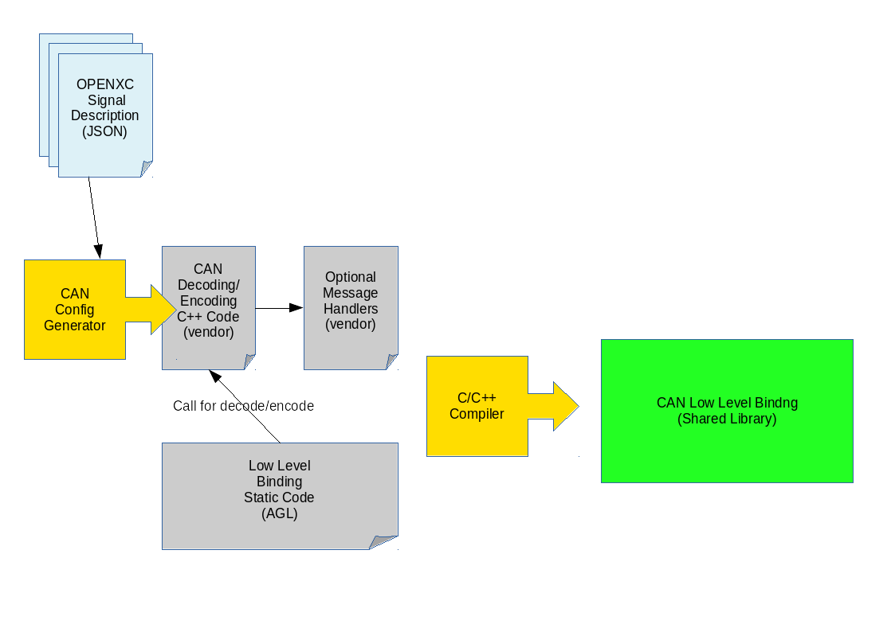
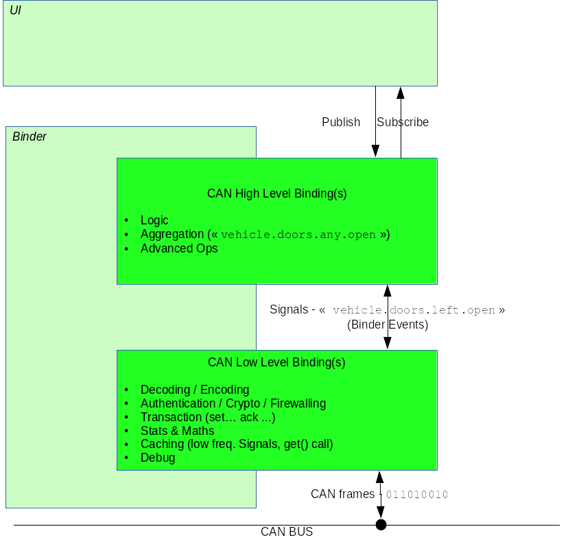

AGL CAN binding architecture
It’s meant to generate, from a JSON file describing CAN messages and diagnostic message (OBD2 for now), a cpp file to integrate with the project.
Once generated binding is built with it and result will be a widget file to install on an AGL target system.

Bringing CAN management into the AGL project is more than allowing decode and print CAN messages, lot of tools can do that (Wireshark, CAN-utils, …).
The goal is to provide a common API and abstraction to the CAN bus then you can bring some more high level functionalities to the system.
CAN binding will be separated in two parts:

-
High level: Binding from which others applications will connect to. It provides valuable access to the CAN bus by aggregate signals or providing new signals from several originals. For example, a signal exposing whether or not a door is open, no matter which one it is. Also, we can imagine an application which supervise if there is no one in the car but moving (1m, 2m ?) to alert the owner of an unexpected behavior. The high level binding will sends a single event representing that behavior to the application which in turn will send a phone message to.
-
Low level: Decode messages that transit and send event through Application Framework to the subscribers with human readable message. It provides some basic access to the bus + some basic mathematical, statistical features (last_values, min, max, timestamps, averaging) as well as basic filter to get discerning signal only (This part are not implemented yet in the low level).

Last but not least, the low level binding can be shipped as binary only using OpenXC inspired AGL low level CAN binding Generator.
Prerequisites
- An AGL system installed with latest Daring Dab version with latest Application framework version >= 0.6.
- Make sure you built the AGL generator else you will not be able to generate custom low-level CAN binding. It will produce a application-generated.cpp file to paste in the source, CAN-binder/low-can-binding/binding/, directory.
- Make sure you already set up the AGL SDK using the following SDK Quick Setup Guide. Alternatively, please refer to official guides available on AGL Developer Site.
If you need to have the graphic stack inside your SDK, you have to prepare your
environment with the iotbzh, or Daring Dab flavor using prepare_meta
tool. To do so, run the following command in your docker image in the step 4
in place of ... [ prepare build environment ] ...:
NOTE These commands assume that proprietary graphic drivers for Renesas Porter board are located in /home/devel/share/proprietary-renesas-rcar directory.
prepare_meta -f iotbzh -o /xdt -l /home/devel/mirror -p /home/devel/share/proprietary-renesas-rcar/ -t m3ulcb -e wipeconfig -e rm_work -e cleartemp
/xdt/build/m3ulcb/agl-init-build-env
- (Optionnal) An USB CAN adapter connected to connector through the right cable) if you want to connect to a real car through the OBD2 connector.
Getting started
CAN config generator usage
Build requirements
- CMake version 3.3 or later
- G++, Clang++ or any C++11 compliant compiler.
Compile
source /xdt/sdk/environment-setup-aarch64-agl-linux
export PATH=$PATH:/xdt/sdk/sysroots/x86_64-aglsdk-linux/usr/bin
export WD=$(pwd)
git clone --recursive https://gerrit.automotivelinux.org/gerrit/apps/low-level-can-service -b Renesas_delivery_Q2
git clone --recursive https://gerrit.automotivelinux.org/gerrit/apps/low-level-can-generator
cd ${WD}/low-level-can-generator
mkdir -p build
cd build
cmake -G "Unix Makefiles" ..
make
Naming convention
We chose a doted naming convention because it’s a well know schema.
It separates and organize names into hierarchy. From the left to right, you describe your names using the more common ancestor at the left then more you go to the right the more it will be accurate.
Let’s take an example, here is an example about standard PID name following this convention:
engine.load
engine.coolant.temperature
fuel.pressure
intake.manifold.pressure
engine.speed
vehicle.speed
intake.air.temperature
mass.airflow
throttle.position
running.time
EGR.error
fuel.level
barometric.pressure
commanded.throttle.position
ethanol.fuel.percentage
accelerator.pedal.position
hybrid.battery-pack.remaining.life
engine.oil.temperature
engine.torque
NOTE It’s recommended that you follow this naming convention to named your CAN signals.
There is only character
*that is forbidden in names because it’s used as wildcard for subscription and unsubscription.This described in the below chapter.
Available decoder
You can use some basic decoder provided by default by the binding which are:
- decoder_t::noopDecoder : Default decoder if not specified, return raw value from signal’s bitfield.
- decoder_t::booleanDecoder : Coerces a numerical value to a boolean.
- decoder_t::stateDecoders : Find and return the corresponding string state for a CAN signal’s raw integer value.
Generating JSON from Vector CANoe Database
CAUTION This chapter has not been tested since it haven’t necessary automotive tools for that.
If you use CANoe to store your gold standard CAN signal definitions, you may
be able to use the OpenXC xml_to_json.py script to make your JSON for you.
First, export the Canoe .dbc file as XML - you can do this with Vector CANdb++.
Next, create a JSON file according to the format defined above, but only define:
- CAN messages.
- Name of CAN signals within messages and their generic_name.
- Optionnaly name of diagnostic messages and their name.
To install the OpenXC utilities and runs xml_to_json.py script:
sudo pip install openxc
cd /usr/local/lib/python2.7/dist-packages/openxc/generator
Assuming the data exported from Vector is in signals.xml and your minimal mapping
file is mapping.json, run the script:
python -m openxc.utils ./xml_to_json.py signals.xml mapping.json signals.json
The script scans mapping.json to identify the CAN messages and signals that
you want to use from the XML file. It pulls the neccessary details of the
messages (bit position, bit size, offset, etc) and outputs the resulting subset
as JSON into the output file, signals.json.
The resulting file together with mapping.json will work as input to the code
generation script.
Generate your config file
To generate your config file you just have to run the generator using the -m
option to specify your JSON file.
./can-config-generator -m ../tests/basic.json -o application-generated.cpp
If you omit the -o option, then code is generated on the stdout.
You also can specify a header and a footer file.
These files must be valid C++ fragment as long as they will be inserted as is.
Use the -h option to display help.
CAUTION: Each
diagnostic_messagemust define the samebusas the binding will use only one bus.
Supported OpenXC items
About now, compliance with OpenXC reference is in progress, can-config-generator
and CAN_signaling will implement them soon. initializers, loopers,
commands and handlers nodes are ignored for now.
This generator will follow OpenXC support status of the low level CAN signaling binding.
NOTE: The
busesitem will not be supported by this generator because the binding use another way to declare and configure buses. Please refer to the binding’s documentation.
Compile and install the binding
Build requirements
- Kernel >= 4.8
- CMake version 3.3 or later
- G++, Clang++ or any C++11 compliant compiler.
Compile
Clone the binding repository, copy the generated file and updated the git submodules.
Execute the following commands from this repository:
cd ${WD}/low-level-can-service
cp ${WD}/low-level-can-generator/build/application-generated.cpp ../low-can-binding/binding
Installation
cd ${WD}/low-level-can-service
mkdir build
cd build
cmake ..
make
make widget
To install it manually, you need to copy the low-can-service.wgt file on your target, then from it execute the following commands :
On your host, to copy over the network :
scp low-can-service.wgt root@<target_IP>:~
On the target, assuming wgt file is in the root home directory:
afm-util install low-can-service.wgt
{ "added": "low-can-service@4.0" }
Configure the AGL system
Virtual CAN device
Connected to the target, here is how to load the virtual CAN device driver and set up a new vcan device :
modprobe vcan
ip link add vcan0 type vcan
ip link set vcan0 up
You also can named your linux CAN device like you want and if you need name it
can0 :
modprobe vcan
ip link add can0 type vcan
ip link set can0 up
CAN device using the USB CAN adapter
Using real connection to CAN bus of your car using the USB CAN adapter connected to the OBD2 connector.
Once connected, launch dmesg command and search which device to use:
dmesg
[...]
[ 131.871441] usb 1-3: new full-speed USB device number 4 using ohci-pci
[ 161.860504] can: controller area network core (rev 20120528 abi 9)
[ 161.860522] NET: Registered protocol family 29
[ 177.561620] usb 1-3: USB disconnect, device number 4
[ 191.061423] usb 1-2: USB disconnect, device number 3
[ 196.095325] usb 1-2: new full-speed USB device number 5 using ohci-pci
[ 327.568882] usb 1-2: USB disconnect, device number 5
[ 428.594177] CAN device driver interface
[ 1872.551543] usb 1-2: new full-speed USB device number 6 using ohci-pci
[ 1872.809302] usb_8dev 1-2:1.0 can0: firmware: 1.7, hardware: 1.0
[ 1872.809356] usbcore: registered new interface driver usb_8dev
Here device is named can0.
This instruction assuming a speed of 500000kbps for your CAN bus, you can try others supported bitrate like 125000, 250000 if 500000 doesn’t work:
ip link set can0 type can bitrate 500000
ip link set can0 up
ip link show can0
can0: <NOARP,UP,LOWER_UP,ECHO> mtu 16 qdisc pfifo_fast state UNKNOWN qlen 10
link/can
can state ERROR-ACTIVE (berr-counter tx 0 rx 0) restart-ms 0
bitrate 500000 sample-point 0.875
tq 125 prop-seg 6 phase-seg1 7 phase-seg2 2 sjw 1
sja1000: tseg1 1..16 tseg2 1..8 sjw 1..4 brp 1..64 brp-inc 1
clock 16000000
On a Rcar Gen3 board, you’ll have your CAN device as can1 because can0
already exists as an embedded device.
The instructions will be the same:
ip link set can1 type can bitrate 500000
ip link set can1 up
ip link show can1
can0: <NOARP,UP,LOWER_UP,ECHO> mtu 16 qdisc pfifo_fast state UNKNOWN qlen 10
link/can
can state ERROR-ACTIVE (berr-counter tx 0 rx 0) restart-ms 0
bitrate 500000 sample-point 0.875
tq 125 prop-seg 6 phase-seg1 7 phase-seg2 2 sjw 1
sja1000: tseg1 1..16 tseg2 1..8 sjw 1..4 brp 1..64 brp-inc 1
clock 16000000
Rename an existing CAN device
You can rename an existing CAN device using following command and doing so move
an existing can0 device to anything else and then use another device as
can0. For a Rcar Gen3 board do the following by example:
sudo ip link set can0 down
sudo ip link set can0 name bsp-can0
sudo ip link set bsp-can0 up
Then connect your USB CAN device that will be named can0 by default.
Configure the binding
The binding reads system configuration file /etc/dev-mapping.conf at start to
map logical name from signals described in JSON file to linux devices name
initialized by the system. Edit file /etc/dev-mappping.conf and add mapping
in section CANbus-mapping.
Default binding configuration use a CAN bus named hs so you need to map it to
the real one, here are some examples:
- Using virtual CAN device as described in the previous chapter:
[CANbus-mapping]
hs="vcan0"
ls="vcan1"
- Using real CAN device, this example assume CAN bus traffic will be on can0.
[CANbus-mapping]
hs="can0"
ls="can1"
- On a Rcar Gen3 board there is an embedded CAN device so
can0already exists. So you might want to use your USB CAN adapter plugged to the OBD2 connector, in this case usecan1:
[CANbus-mapping]
hs="can1"
CAUTION VERY IMPORTANT: Make sure the CAN bus(es) you specify in your configuration file match those specified in your generated source file with the
CAN-config-generator.
Run it, test it, use it
You can run the binding using afm-util tool, here is the classic way to go:
afm-util run low-can-service@4.0
1
You can find instructions to use afm-util tool here, as well as documentation about Application Framework.
But you can’t control nor interact with it because you don’t know security token that Application Framework gaves it at launch.
So, to test it, it is better to launch the binding manually. In the following example, it will use port 1234 and left empty security token for testing purpose:
afb-daemon --binding=/var/lib/afm/applications/low-can-service/4.0/lib/afb-low-can.so --rootdir=/var/lib/afm/applications/low-can-service/4.0/ --port=1234 --token=1
NOTICE: binding [/usr/lib/afb/afb-dbus-binding.so] calling registering function afbBindingV1Register
NOTICE: binding /usr/lib/afb/afb-dbus-binding.so loaded with API prefix dbus
NOTICE: binding [/usr/lib/afb/authLogin.so] calling registering function afbBindingV1Register
NOTICE: binding /usr/lib/afb/authLogin.so loaded with API prefix auth
NOTICE: binding [/var/lib/afm/applications/low-can-service/4.0/libs//low-can-binding.so] calling registering function afbBindingV1Register
NOTICE: binding /var/lib/afm/applications/low-can-service/4.0/libs//low-can-binding.so loaded with API prefix low-can
NOTICE: Waiting port=1234 rootdir=/var/lib/afm/applications/low-can-service/4.0/
NOTICE: Browser URL= http:/*localhost:1234
On another terminal, connect to the binding using previously installed AFB Websocket CLI tool:
afb-client-demo ws://localhost:1234/api?token=1
You will be on an interactive session where you can communicate directly with the binding API.
The binding provides at this moment 2 verbs, subscribe and unsubscribe, which can take argument by a JSON event object.
The argument value is the CAN message generic_name as described in the JSON file used to generate cpp file for the binding.
To use the AFB Websocket CLI tool, a command line will be like the following :
<api> <verb> <arguments>
Where:
- API : low-can.
- Verb : subscribe or unsubscribe
- Arguments : { “event”: “driver.doors.open” }
Subscription and unsubscription
You can ask to subscribe to chosen CAN event with a call to subscribe API verb with the CAN messages name as JSON argument.
NOTE: If no argument is provided, then you’ll subscribe to all signals at once.
For example from a websocket session:
low-can subscribe { "event": "doors.driver.open" }
ON-REPLY 1:low-can/subscribe: {"jtype":"afb-reply","request":{"status":"success","uuid":"a18fd375-b6fa-4c0e-a1d4-9d3955975ae8"}}
Subscription and unsubscription can take wildcard in their event value.
To receive all doors events :
low-can subscribe { "event" : "doors*" }
ON-REPLY 1:low-can/subscribe: {"jtype":"afb-reply","request":{"status":"success","uuid":"511c872e-d7f3-4f3b-89c2-aa9a3e9fbbdb"}}
Then you will receive an event each time a CAN message is decoded for the event named doors.driver.open
ON-EVENT low-can/messages.doors.driver.open({"event":"low-can\/messages.doors.driver.open","data":{"name":"messages.doors.driver.open","value":true},"jtype":"afb-event"})
Notice that event shows you that the CAN event is named messages.doors.driver.open but you ask for event about doors.driver.open.
This is because all CAN messages or diagnostic messages are prefixed by the JSON parent node name, messages for CAN messages and diagnostic_messages for diagnostic messages like OBD2.
This will let you subscribe or unsubcribe to all signals at once, not recommended, and better make filter on subscribe operation based upon their type. Examples:
low-can subscribe { "event" : "*speed*" } --> will subscribe to all messages with speed in their name. Search will be make without prefix for it.
low-can subscribe { "event" : "speed*" } --> will subscribe to all messages begin by speed in their name. Search will be make without prefix for it.
low-can subscribe { "event" : "messages*speed*" } --> will subscribe to all CAN messages with speed in their name. Search will be on prefixed messages here.
low-can subscribe { "event" : "messages*speed" } --> will subscribe to all CAN messages ending with speed in their name. Search will be on prefixed messages here.
low-can subscribe { "event" : "diagnostic*speed*" } --> will subscribe to all diagnostic messages with speed in their name. Search will be on prefixed messages here.
low-can subscribe { "event" : "diagnostic*speed" } --> will subscribe to all diagnostic messages ending with speed in their name. Search will be on prefixed messages here.
You can stop receiving event from it by unsubscribe the signal the same way you did for subscribe
low-can unsubscribe { "event": "doors.driver.open" }
ON-REPLY 2:low-can/unsubscribe: {"jtype":"afb-reply","request":{"status":"success"}}
low-can unsubscribe { "event" : "doors*" }
ON-REPLY 3:low-can/unsubscribe: {"jtype":"afb-reply","request":{"status":"success"}}
Filtering capabilities
It is possible to limits received event notifications into minimum and maximum boundaries as well as doing frequency thinning. This is possible using the argument filter with one or more of the filters available :
- frequency: specify in Hertz the frequency which will be used to getting notified of new CAN events for the designated signal. If, during the blocked time, further changed CAN messages are received, the last valid one will be transferred after the lockout with a RX_CHANGED.
- min: Minimum value that the decoded value needs to be above to get pushed to the subscribed client(s).
- max: Maximum value that the decoded value needs to be below to get pushed to the subscribed client(s)
Order doesn’t matter neither the number of filters chosen, you can use one, two or all of them at once.
Usage examples :
low-can subscribe {"event": "messages.engine.speed", "filter": { "frequency": 3, "min": 1250, "max": 3500}}
low-can subscribe {"event": "messages.engine.load", "filter": { "min": 30, "max": 100}}
low-can subscribe {"event": "messages.vehicle.speed", "filter": { "frequency": 2}}
Using CAN utils to monitor CAN activity
You can watch CAN traffic and send custom CAN messages using can-utils preinstalled on AGL target.
To watch watch going on a CAN bus use:
candump can0
Or for an USB CAN adapter connected to porter board:
candump can1
Send a custom message:
cansend can0 ID#DDDDAAAATTTTAAAA
You can also replay a previously dumped CAN logfiles. These logfiles can be found in can_samples directory under Git repository. Following examples use a real trip from an Auris Toyota car.
Trace has been recorded from a CAN device can0 so you have to map it to the
correct one you use for your tests.
Replay on a virtual CAN device vcan0:
canplayer -I trip_test_with_obd2_vehicle_speed_requests vcan0=can0
Replay on a CAN device can0:
canplayer -I trip_test_with_obd2_vehicle_speed_requests can0
Replay on a CAN device can1 (porter by example):
canplayer -I trip_test_with_obd2_vehicle_speed_requests can1=can0